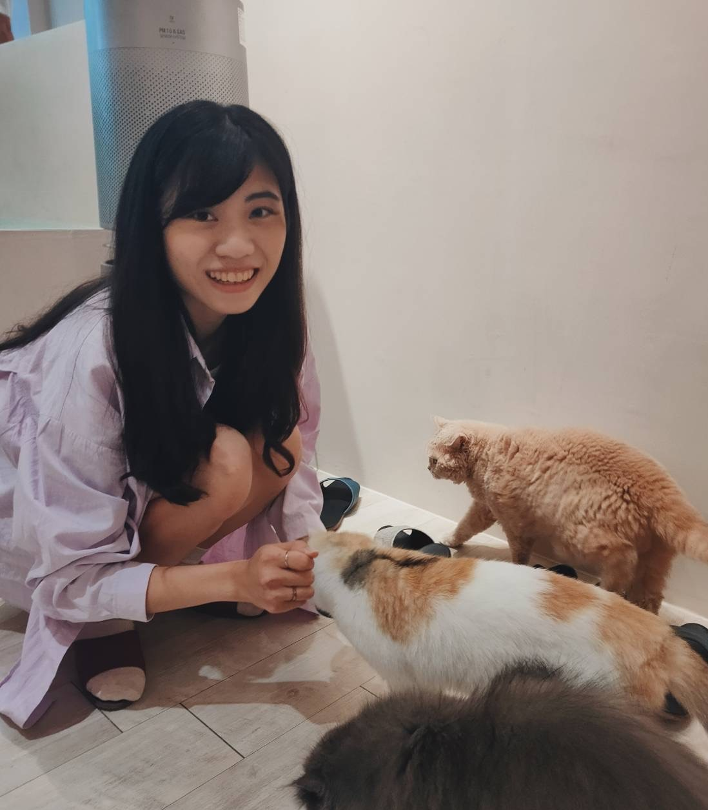

個人簡介
台南人，畢業於國立成功大學職能治療學系，曾擔任臨床兒童職能治療師，目前任職於新北市政府衛生局。
穿梭餐飲業、食品工廠、醫療器材商、醫療機構等場域是我的日常，熟稔食品、醫藥政、醫療器材、化粧品等衛生法規和稽查實務技巧，我具備良好吸收新知、臨機應變能力，並對團隊合作、人際互動有充分經驗。
我喜歡旅遊、戶外活動，樂於嘗試沒有接觸過的事物、勇於挑戰自己，興趣包含登山、潛水及衝浪，使我的生活豐富、眼界寬廣。
為成為軟體工程師做過什麼努力？
我於去年底萌生接觸軟體產業的念頭，在初步蒐集資料後，我參加了台灣大學資訊系統訓練班開設的Python課程，利用下班後及週末上課，於今年三月初剛結束課程並完成期末報告—簡易搶票程式。
在這次上課及報告經驗後，我更加堅定成為軟體工程師的目標，決定參與課程內容較完整的Bootcamp。自搜尋到WeHelp Bootcamp資訊到報名截止日僅有十天不到，但我仍不放棄任何希望，立刻著手研讀彭彭導師的教學課程，並成功在截止日前完成一份網頁，提出申請書。
若參與訓練，怎麼安排學習時間？
若有幸錄取WeHelp開設的訓練課程，我預計於四月底離職，離職前會利用週間晚上及週末研讀線上教學影片，並安排每週一早上休假，準時參加線上會議；辭職後全力精進程式技能，除了熟悉線上課程內容，亦會準時參與每週五實體活動，直到第三階段結束。
另外，我預計和志同道合的友人共組讀書會，每週固定聚會，研讀程式技巧，互相切磋討論，一方面督促自己完成每週進度。
是否有想要加入的公司？為什麼？
目前還未有明確的目標公司，但我仍嚮往最終可以進入Google等頂尖公司，除了技術上取得極高成就，這些企業文化、社會責任和價值也是我想觸及的；另外，能夠與世界優秀人才共事、互相交流成長，必定是提升自身能力的絕佳途徑。
但在達成最終目標前，我仍希望可以先加入具前瞻性的新創公司，透過新創產業中相較多元的挑戰，累積各方面問題解決能力，並實現獨自處理、整合前後端業務的能力。
負面情緒經歷
近期的負面情緒發生於職場，我目前任職的單位採團隊合作模式，因此有大量分工環節，面對習慣性逃避責任的同事，常需幫忙承擔業務或修補錯誤。在這樣的職場中，我累積了大量負面感受，曾選擇隱忍、維持表面友好，但經過一段時間後，我發現在工作中越來越不快樂，負面情緒已從對特定事件轉變為特定人物，於是我決定著手處理。
先沉澱滿溢的情緒，降低被蒙蔽雙眼的機會，待情緒平穩後，和該名同事直接點出希望改變的部分並說明原因，「理性溝通」是我認為解決事情最有效的方式，當事情有轉變後，曾出現的負面情緒便會隨之消失。
關於這份申請網頁的開發技術心得
透過彭彭導師淺顯易懂的教學課程，我已初步理解有關HTML、CSS等網頁前端所運用到的基礎語法，也可以按照老師的示範和提示完成簡易個人網頁製作，在過程中感受到前所未有的樂趣和成就感，原來曾對電腦一竅不通的我，有辦法在一週內做到這麼多事，讓我更加憧憬能透過紮實的Bootcamp課程安排，一步步提升coding實力，成為一名為業界所需要的軟體工程師。
最重要的人際交往原則
對我而言，人與人之間最重要的原則和基礎是「尊重」，交際來往過程不免會有摩擦衝突，唯有尊重能使雙方溝通並相互理解，進而解決問題。
其他
如同前述，我於去年底萌生接觸軟體領域的念頭，並於三月初確立目標，在WeHelp Bootcamp申請截止的前一週搜尋到相關訊息。從接觸基礎語法、著手撰寫程式碼、一直到最後完成個人申請書網頁，雖然只有短短一週，但我利用每日下班後以及午休空檔不斷學習修改，不放棄任何希望，相信能夠在時間內完成，並且交出令自己滿意的作品。最終，我也成功實現這個目標。
一旦確立目標，我會用盡全力達成，不論過程遇到多少阻礙。期待有機會能參與WeHelp Bootcamp，和有著同樣憧憬的人們交流打拼，直到成為心目中軟體工程師的樣子。